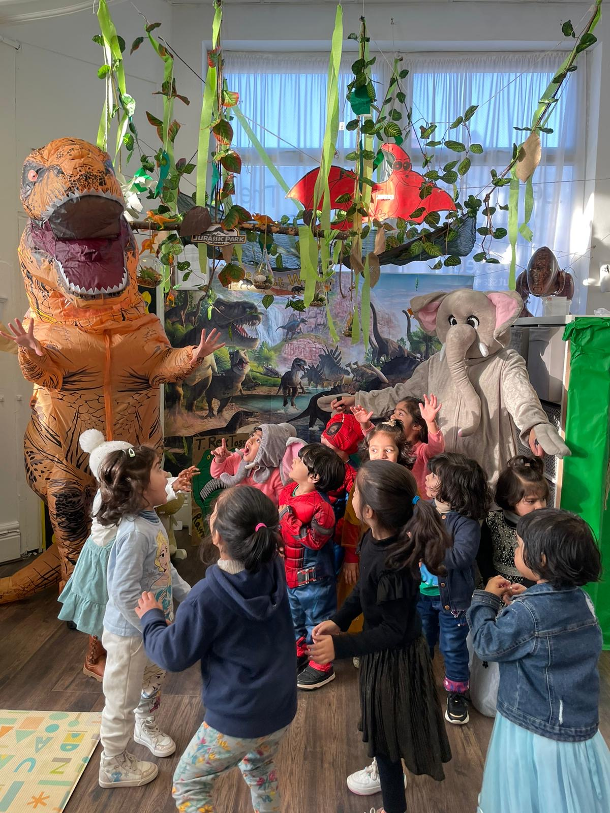

Choosing the right early years learning approaches can feel overwhelming for parents and teachers. In the UK, many nurseries and schools use both play-based learning and structured learning to support children’s development. However, understanding the difference between play-based and structured learning helps you decide what works best for each child. This article explores both methods in depth, explaining how they work, their benefits, and how they fit into early years teaching methods in a friendly way.
Parents often look for real examples of how nurseries apply these ideas. For instance, the approach followed at the Lemon Tree Pre-School shows how a well-designed environment supports both guided and independent learning.
Through this comparison, you will see how these approaches shape learning in young children and how teachers and parents can work together to make the most of each one.
What Is Play Based vs Structured Learning?
When we talk about play based vs structured learning, we are comparing two different early years learning approaches. Play-based learning is rooted in the idea that children explore, experiment, and learn best when they are actively engaged in play activities that interest them. Structured learning, on the other hand, involves planned lessons or directed activities with clear learning goals and outcomes.
Both approaches have a place in early education. Many UK nurseries, including settings like Lemon Tree, explain their philosophy clearly on what makes Lemon Tree Nursery, showing how structured routines and play can work side by side.
The key is understanding how each method supports a child’s development so you can match it to individual needs. This leads us naturally into how these methods are used day to day.
Understanding Early Years Teaching Methods
In real nursery environments, learning rarely fits into a single box. The best nursery teaching methods in the UK use a combination of guided activities and child-initiated play. This blend is visible in the way children settle into new settings, something highlighted on the settling-in support information provided for new parents at Lemon Tree.

Effective early education considers safety and wellbeing first. For example, structured routines around care and supervision are explained in the nursery’s health and safety standards guidance. These elements form the foundation on which both play and structured learning are built.
Understanding how these methods work together helps parents appreciate that there is no strict divide between the two.

How Play-Based Learning Works in the Classroom
Key Features of Play-Based Learning
Play-based learning puts the child at the centre. Children explore materials, create games, and follow their natural curiosity. In high-quality settings such as Lemon Tree, physical development is supported through active play experiences both indoors and outdoors.
Play-led learning allows children to engage with real-world experiences. Activities designed to help children understand the world around them encourage curiosity and confidence in a natural way.
Skills Children Develop Through Play
Through play, children develop creativity, independence, social awareness and communication skills. Parents interested in seeing how these skills grow in a real environment can look at the gallery section of the Lemon Tree website, which shows everyday play in action.
This natural form of learning also builds early problem-solving skills and emotional resilience. Many nurseries share examples of such activities in their blog section, helping parents understand the value of learning through play.
What Structured Learning Looks Like for Young Children
Core Elements of Structured Learning
Structured learning applies more direct adult guidance and organised classroom activities. At Lemon Tree, parents can register a child for a place and discuss how structured routines are balanced with creative play.
Structured tasks might include counting games, story time or guided art projects. These are designed with clear objectives in mind and help children focus on specific skills.
Academic Benefits of a Structured Approach
A structured approach helps children prepare for school life. Parents who need practical information about enrolment, sessions, and daily routines can check the contact details and location information on the Lemon Tree website.
Structured experiences help children gain confidence with classroom routines and expectations, an important step before starting reception class.
Play Based vs Structured Learning: Key Differences
The difference between play-based and structured learning lies mainly in who leads the activity. In play-based learning, the child leads. In structured learning, the adult leads.
Parents exploring nursery options can learn about how Lemon Tree balances these ideas by reading about the nursery’s background and ethos. Understanding a setting’s philosophy often helps parents decide what style suits their child.
Advantages of Play-Based Learning in Early Years
Play encourages imagination, creativity and social development. It allows children to learn without pressure and supports emotional well-being.
The founders’ mission and community role at Lemon Tree highlight how a play-rich environment can help children grow into confident and curious learners.
Such environments value diversity, inclusion and individuality, something clearly reflected in how the nursery embraces diversity and cultural learning.
Challenges and Limitations of Both Approaches
Neither approach is perfect on its own. Too much structure can feel rigid. Too much free play without guidance may miss opportunities for skill development.
The best solution is a thoughtful balance. Seeing real classroom images in the gallery section helps parents understand how this balance looks in practice.
Which Method Fits Your Child’s Learning Style?
Every child learns differently. Some thrive in structured routines. Others blossom in creative play.
Visiting a nursery in person can help parents decide. Using the site’s contact form to ask questions is a helpful first step for many families.
The Role of Teachers and Parents in Each Approach
Teachers observe, guide and support children during play. They also plan structured tasks when needed.
Parents play a key role, too. Simple home activities that mirror nursery life help children feel secure. Practical details like session planning and attendance can be found in the nursery’s opening times and session structure information.
Comparison Table: Play-Based Learning vs Structured Learning
|
Aspect |
Play-Based Learning |
Structured Learning |
|
Control |
Child-led |
Teacher-led |
|
Focus |
Exploration and creativity |
Specific academic skills |
|
Environment |
Flexible and open-ended |
Planned and goal-oriented |
|
Benefits |
Social and emotional growth |
School readiness |
|
Examples |
Role play and building |
Literacy or maths tasks |
Common Myths About Play-Based and Structured Learning
A common myth is that play is not real learning. Another is that structured learning is too strict.
Looking at reviews and testimonials from real parents can help clear up these misunderstandings and show how both approaches benefit children.
Final Thoughts
Understanding play based vs structured learning helps parents make confident choices about early education. Both methods are valuable, and when combined thoughtfully, they create the strongest foundation for lifelong learning.
If you are exploring nursery options in the UK, visiting the Lemon Tree Pre-School is a great way to see how these ideas come to life in a real setting.
Choosing the right environment is not about picking one method over the other. It is about finding a place where your child feels happy, supported and inspired to learn.
FAQs
What is the main difference between play-based and structured learning?
Play-based learning is child-led, allowing children to explore, experiment, and learn at their own pace through curiosity-driven activities. Structured learning is adult-led, with clear objectives and planned tasks focused on developing specific skills and routines.
Is play-based learning effective for academic success?
Yes, research shows that guided play helps children develop early literacy, numeracy, and problem-solving skills in meaningful ways. It also supports social and emotional development, building confidence that carries into formal learning environments.
At what age is structured learning more suitable?
Structured learning elements can be introduced in preschool years, typically around ages three to five, when children are ready for short, focused tasks. However, it should always be balanced with plenty of play to support creativity, curiosity, and independent thinking.
Can play-based and structured learning be used together?
Absolutely. Most UK nurseries combine both approaches, using play to explore concepts and structured tasks to practise specific skills. This blended method ensures children develop holistically while also meeting school readiness goals effectively.
Which method is better for early childhood development?
Neither approach is superior on its own; each supports different areas of growth in young children. A balanced mix of play-based and structured learning helps children build confidence, social skills, and academic foundations simultaneously.